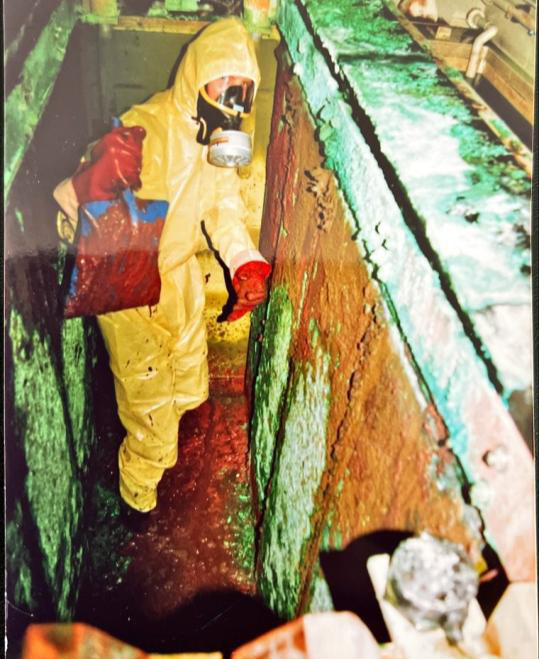
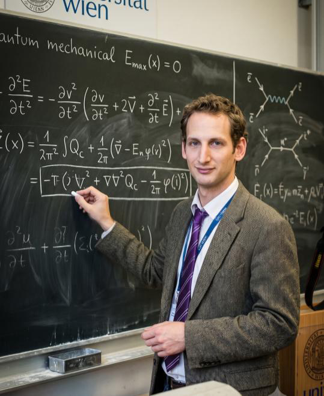
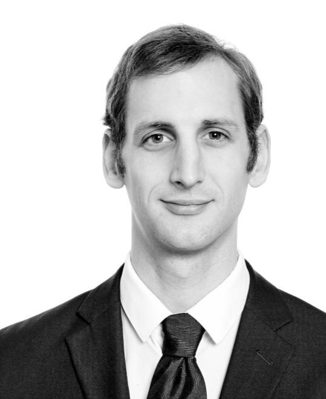
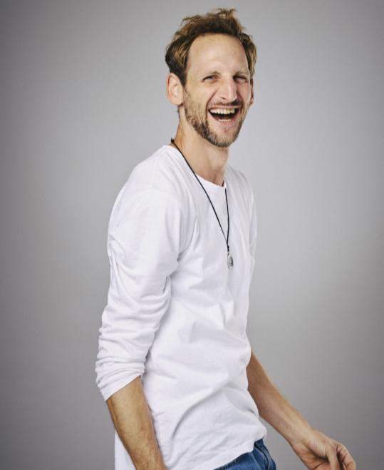
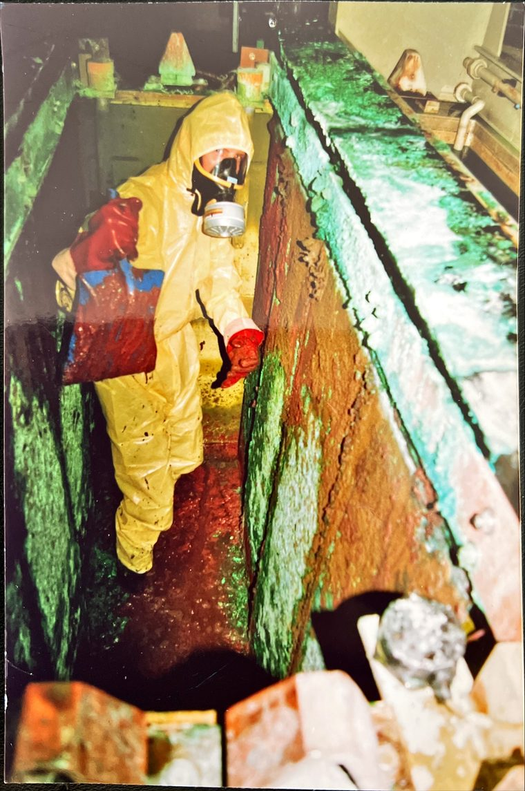

From the plating tank to AI development

surface finishing

MSc, University of Vienna

& Lean Management

secure galvano ai
My career started where it smells of acid and gloves are mandatory: in the stripping department of a plating shop. I completed an apprenticeship as a surface finishing technician, later passed the master craftsman exam in surface finishing (Meisterprüfung), and spent 15 years working directly on plating lines — from running the line to process engineering. In total, that adds up to more than 20 years in the industry.

I know what it feels like when a bath goes off or a customer complaint comes in, and during root cause analysis you lose track of hundreds of individual readings. That experience went into the analysis logic: a prioritized list of recommended actions for each analysis run, which helps your team plan its work and spot deviations before they turn into scrap.
Alongside that, I studied physics at the University of Vienna (Universität Wien) — MSc in Environmental Physics with a focus on materials physics, grade average 1.1 (on the Austrian scale, where 1 is the best grade), graduated with distinction. My master's thesis on high-pressure torsion of high-entropy alloys taught me how to derive reproducible results from measurement data — a discipline that is rarely formalized in day-to-day production.
On top of that came Lean Management training as a methodical basis for structured root cause analysis. Shop-floor practice, physics and methodology work together in every analysis.
On June 1, 2025, I turned this into my own company — deliberately focused on a single industry rather than on digitalization in general.
Today I bring these three worlds together in AI systems for electroplating that run locally, deliver traceable results and can be followed in an intro call without any prior knowledge. I know both sides — running the line and analyzing the process data — and the methodology that connects them. Otherwise, an AI project in a factory needs several departments to work together, and that coordination is usually the bottleneck, not the technology. I can discuss an idea with the line operator at the line in the morning and walk production management through it as a working demo in the afternoon.
I don't work alone. You have one point of contact, and behind him are experienced specialists in law, tax, data security and cybersecurity, and intellectual property — the same people who supported the first project. Who contributed (in German) →
What drives me
Helping plating shops achieve more with fewer resources. The industry is under pressure — energy costs, chemical prices, ESG requirements, a shortage of skilled workers. AI is not an end in itself here; it is a tool that only pays off when it is used in the right place.
Practice before hype
Solutions have to work at the tank, not just in the demo. Usable on site, transferable to your own team, compliant with data protection rules.
Method before magic
Reproducible models, explainable decisions. Model audit by TÜV AUSTRIA Trusted AI (TRUSTIFAI) successfully completed.
Sustainability before growth
Fewer chemicals, less energy, less water, less scrap — as target metrics that are measured and documented in the project.